With yourself
Travel gives you the chance to uncover your deepest self and rediscover who you are, far from routine and the urban noise.
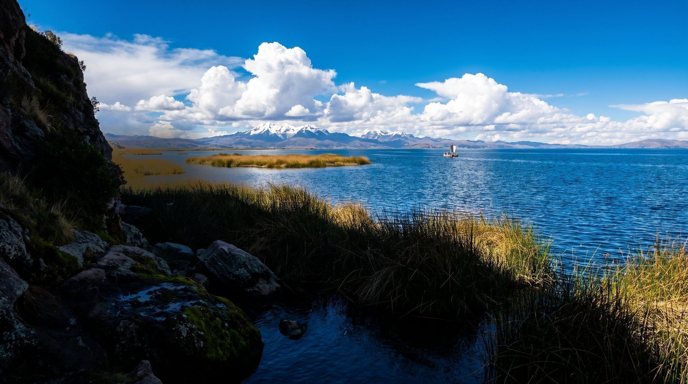
Routes through Peru designed by Patricia Deza: from the Andes to the Amazon, to connect with living systems and ancestral wisdom, and leave every place better than we found it.
“You cannot protect what you do not know.”
Travel opens a door to something bigger than ourselves: walking in nature, meeting the local culture and its ancestral legacy, talking with the people of each place, finding patterns in nature that serve everyday life. Nanntu designs journeys so that door opens, and so whoever crosses it returns as an ambassador for the Andes and the Amazon.
“Regeneration means putting life at the center of every decision,” writes Paul Hawken, one of the voices guiding this way of traveling.
Travel gives you the chance to uncover your deepest self and rediscover who you are, far from routine and the urban noise.
Time and intention to interact: sharing stories during a ceremony, learning from the local culture, letting those who know their land teach you.
Connecting with nature, even for a moment, and discovering the deep and the extraordinary: feeling that you belong to the landscape.
Every Nanntu route descends through ecological floors that are different worlds: from the altiplano at 3,812 meters to the lowland jungle at 183. The page descends with you.
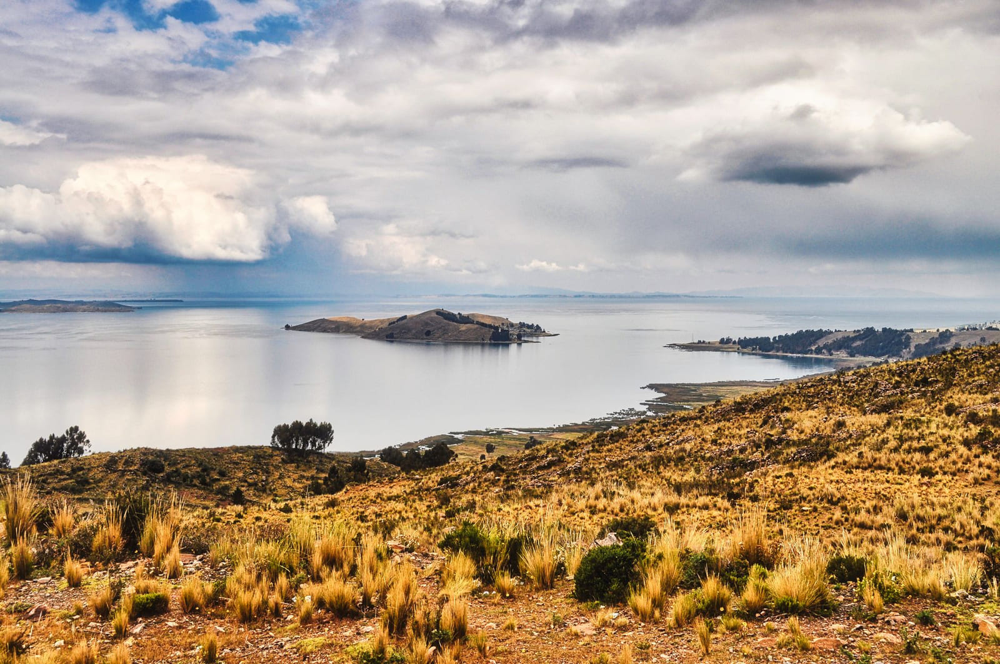
Where Nanntu begins. Pat grew up on these shores, among community gatherings and ancestral stories told beside the water. Here the journey is learned slowly: sailing the totora reeds, sharing a family's table, listening to the lake the way you listen to an elder.
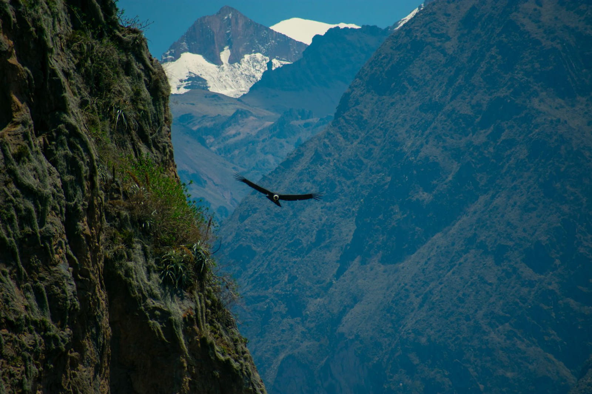
Disconnect from the everyday world and be free to connect with the unknown: watch the condor glide the canyon, find new perceptions about life in the Andes and build a sense of belonging with the place.
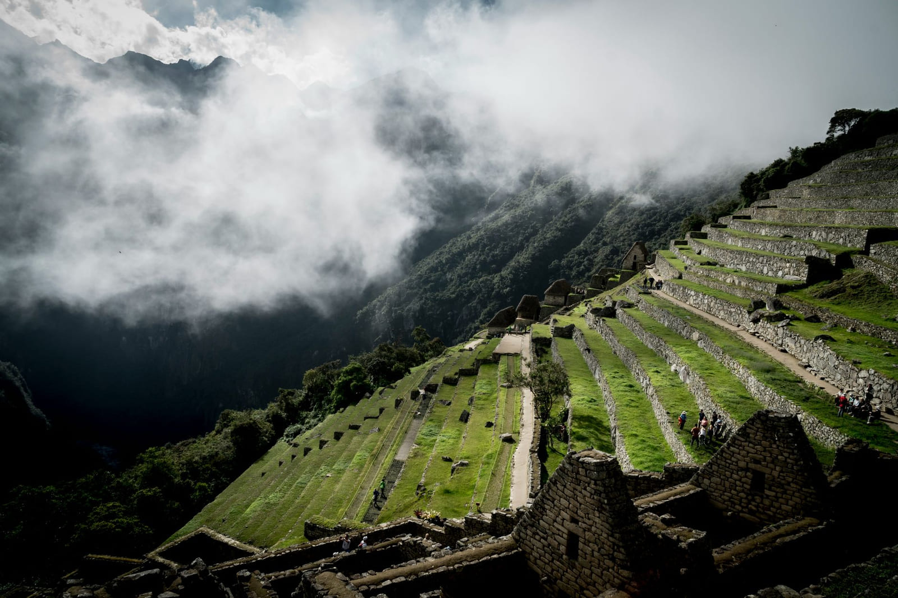
Ancestral legacy is not a museum. It is a way of thinking the territory that is still alive in terraces, trails and ceremonies, and it transforms the vision of those who walk it with attention.
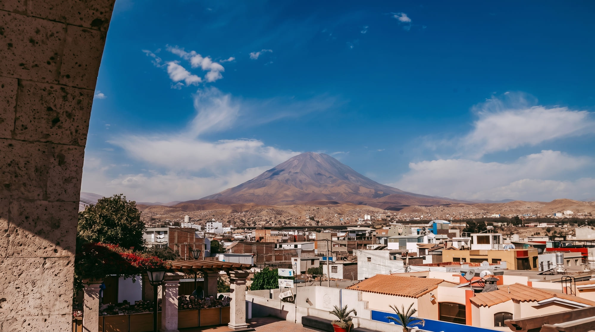
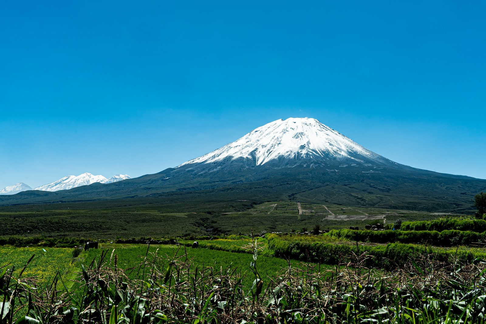
The white-stone city where Pat lives and plants. On the slopes of Chachani she plants queñua trees with Un Árbol Una Vida: for the travelers who wanted to leave a regenerative footprint, sowing life and intentions into the soil. Travel can also be this: returning as good ancestors, leaving fertile ground for the generations to come.
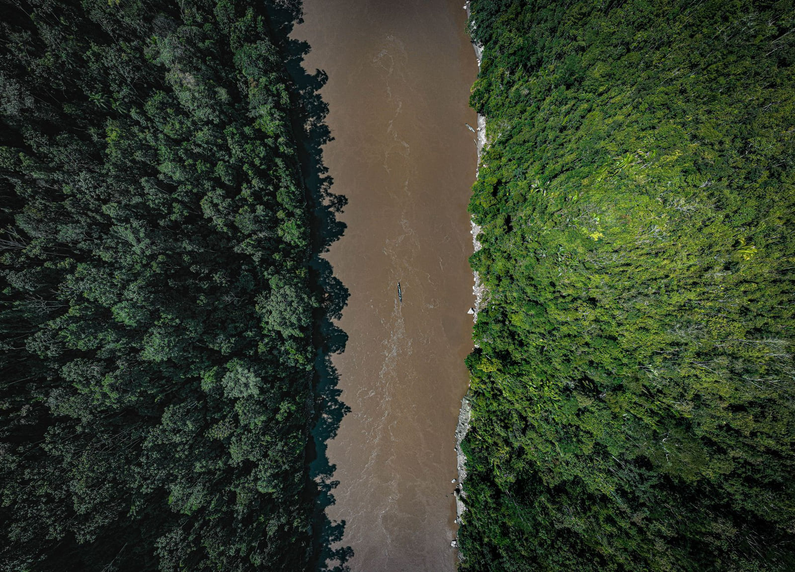
“Insects are the foundation of how every ecosystem works.”
The jungle that taught Pat the value of indigenous knowledge, alongside the Ese Eja native community. Here the challenge is with yourself: discovering your purpose, immersing yourself in culture and nature, feeling the unknown.
Five intentions travel with every route: the HEART framework of the Transformational Travel Council, whose study group Pat joined in 2021.
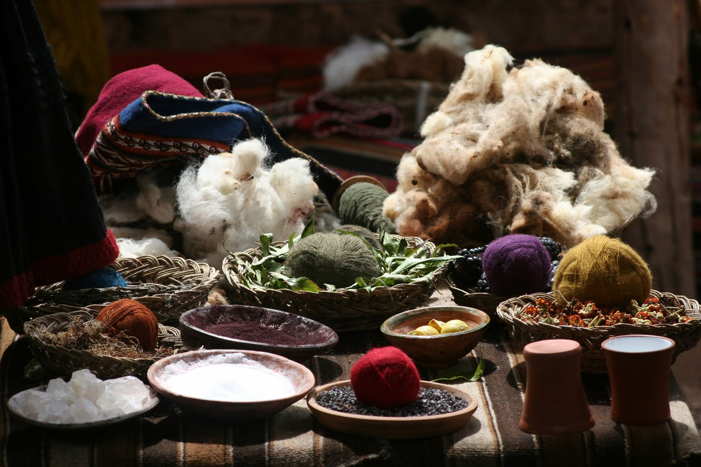
Learning from the plants that dye the wool, from sowing and from traditional dishes, supporting local communities and regenerating the soil.
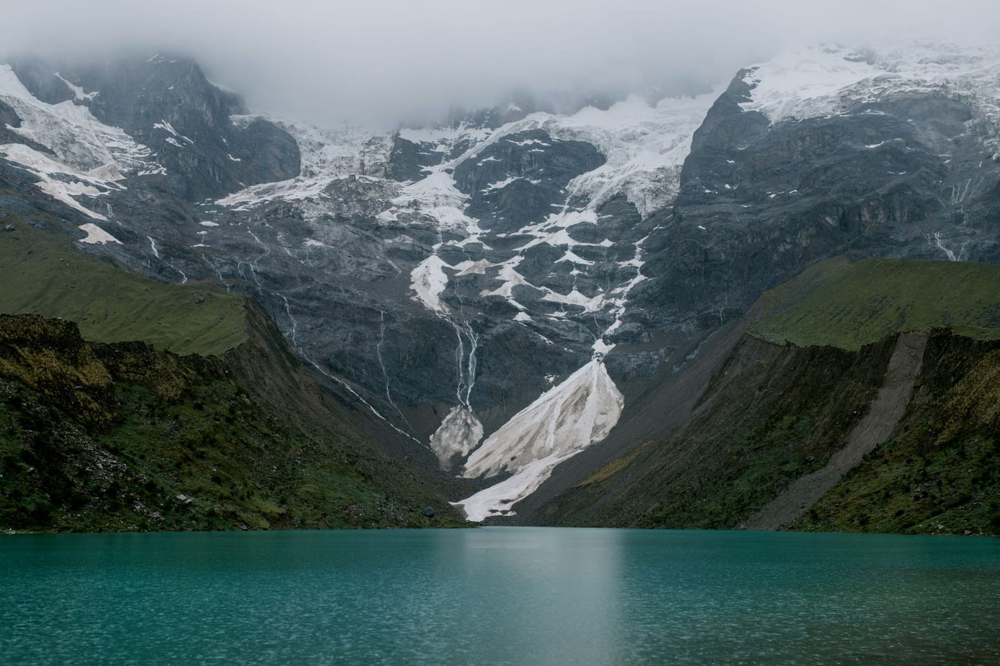
Looking for patterns in living, interconnected systems, and letting the landscape do its share of the work.
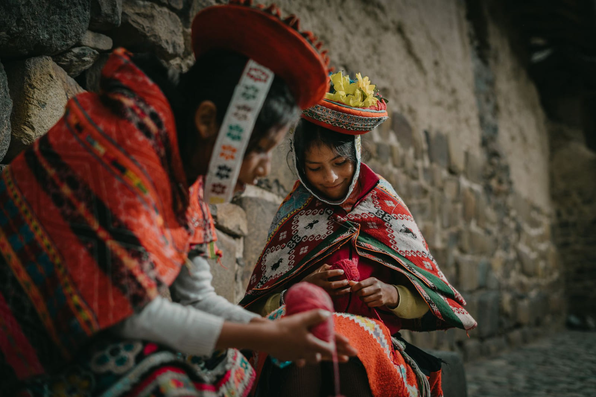
Sharing stories and questions with those who know their land: connection with others is half the journey.
“Every route I create is designed so you live unforgettable experiences while we contribute to the regeneration of the places we explore.” Pat · @regenwithpatWho designs your journey
Peruvian travel designer. She grew up on the shores of Lake Titicaca, in Puno, among community gatherings and ancestral stories. She worked with the Ese Eja native community in the Madre de Dios jungle and joined the Transformational Travel Council's study group in 2021.
She designs every route thinking about the traveler (what you seek, what you need, what you long for when traveling through Peru) and, at the same time, about how that journey can positively impact the places it visits.
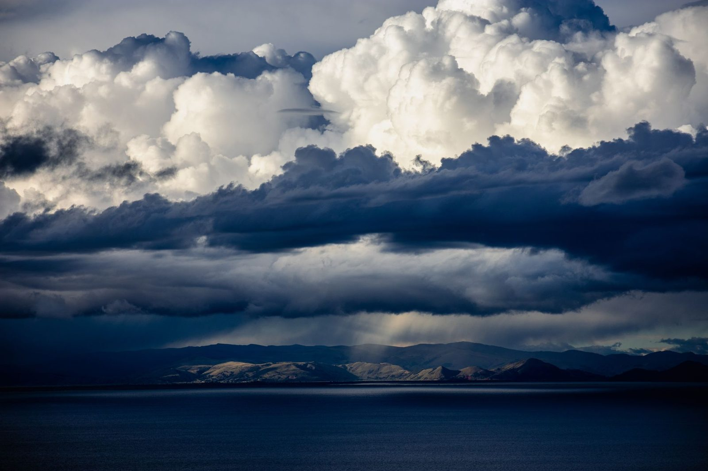
One email to patricia@nanntu.com is enough to start: who is traveling, how much time you have and what you would like to feel. Pat designs the rest with you.
Let's design your journeyPat replies in English and Spanish, from Arequipa for all of Peru.